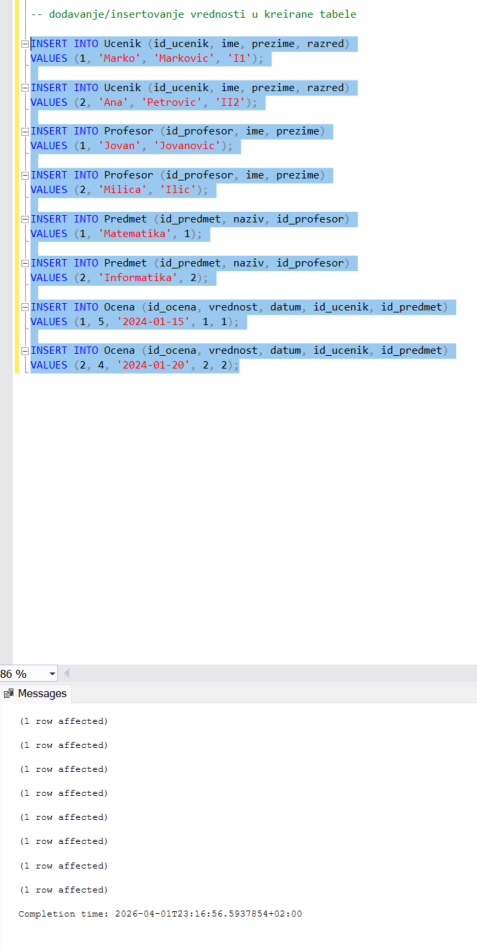
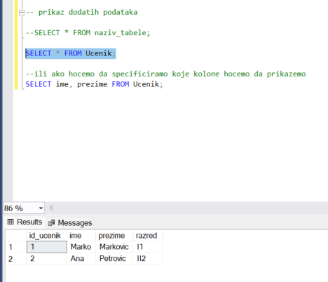
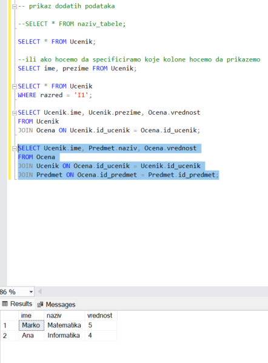

Unos i pretraga podataka (INSERT i SELECT)
U prethodnoj lekciji kreirali smo bazu podataka i tabele za informacioni sistem za školu koristeći SQL Server Management Studio. Definisali smo strukturu baze i uspostavili veze između tabela pomoću primarnih i stranih ključeva. Sada prelazimo na sledeći korak: rad sa podacima.
U ovoj lekciji naučićemo kako da unesemo podatke u tabele i kako da ih pretražujemo pomoću SQL upita. Tek kada u bazi postoje stvarni podaci, možemo zaista da proverimo da li naš sistem radi onako kako smo planirali.
Zašto su podaci važni
Zamisli da imamo napravljene tabele Ucenik, Profesor, Predmet i Ocena, ali da su sve prazne. Da li bismo tada mogli da saznamo koji učenik ima koju ocenu? Ne bismo, jer baza bez podataka ima strukturu, ali nema sadržaj.
Zato je sledeći logičan korak unos podataka. Za unos podataka koristimo SQL komandu INSERT.
Osnovni oblik INSERT komande
Osnovni oblik ove komande izgleda ovako:
INSERT INTO naziv_tabele (kolona1, kolona2, ...)
VALUES (vrednost1, vrednost2, ...);
Važno je da redosled vrednosti odgovara redosledu kolona koje smo naveli. Ako pogrešimo redosled, podaci mogu završiti u pogrešnim kolonama ili komanda neće moći da se izvrši.
Unos podataka u tabelu Ucenik
Počnimo od tabele Ucenik. U nju možemo uneti nekoliko primera podataka.
INSERT INTO Ucenik (id_ucenik, ime, prezime, razred)
VALUES (1, 'Marko', 'Markovic', 'I1');
INSERT INTO Ucenik (id_ucenik, ime, prezime, razred)
VALUES (2, 'Ana', 'Petrovic', 'II2');
Ovim komandama dodajemo dva reda u tabelu Ucenik. Svaki red predstavlja jednog konkretnog učenika.
Unos podataka u ostale tabele
Na isti način možemo uneti podatke i u tabelu Profesor.
INSERT INTO Profesor (id_profesor, ime, prezime)
VALUES (1, 'Jovan', 'Jovanovic');
INSERT INTO Profesor (id_profesor, ime, prezime)
VALUES (2, 'Milica', 'Ilic');
Zatim unosimo podatke u tabelu Predmet. Ovde treba obratiti pažnju na strani ključ id_profesor, koji mora odgovarati postojećem profesoru.
INSERT INTO Predmet (id_predmet, naziv, id_profesor)
VALUES (1, 'Matematika', 1);
INSERT INTO Predmet (id_predmet, naziv, id_profesor)
VALUES (2, 'Informatika', 2);
Na kraju unosimo podatke u tabelu Ocena. Pošto ova tabela sadrži strane ključeve ka tabelama Ucenik i Predmet, vrednosti koje unosimo moraju već postojati u tim tabelama.
INSERT INTO Ocena (id_ocena, vrednost, datum, id_ucenik, id_predmet)
VALUES (1, 5, '2024-01-15', 1, 1);
INSERT INTO Ocena (id_ocena, vrednost, datum, id_ucenik, id_predmet)
VALUES (2, 4, '2024-01-20', 2, 2);
Sada naša baza više nije prazna. U njoj već postoje učenici, profesori, predmeti i ocene, pa možemo da počnemo sa pretragom.
Selekcijom upita i klikom na dugme Execute možemo izvršiti komandu. Ovako to izgleda u SQL Server Management Studio:

Osnovni SELECT upit
Kada unesemo podatke, sledeći korak je da ih pretražimo. Za to koristimo SELECT komandu. Ona nam omogućava da dobijemo podatke iz jedne ili više tabela.
Najjednostavniji oblik SELECT komande je:
SELECT * FROM naziv_tabele;
Zvezdica znači da želimo da prikažemo sve kolone iz tabele. Na primer:
SELECT * FROM Ucenik;
Ova komanda će prikazati sve učenike koje smo uneli.
Ako želimo da prikažemo samo određene kolone, možemo ih navesti:
SELECT ime, prezime FROM Ucenik;

Ova komanda vraća samo imena i prezimena učenika.
Filtriranje podataka pomoću WHERE
Ponekad ne želimo da vidimo sve podatke, već samo deo njih. Tada koristimo WHERE.
SELECT * FROM Ucenik
WHERE razred = 'I1';
Ova komanda vraća samo učenike iz razreda I1.
Razmisli o tome kako bi izgledao upit kojim bismo pronašli samo učenike iz razreda II2. Vidimo da SQL upit zapravo liči na pitanje koje postavljamo bazi.
Povezivanje tabela pomoću JOIN
Još jedna veoma važna stvar je povezivanje tabela. Pošto su naše tabele povezane pomoću stranih ključeva, možemo koristiti JOIN da spojimo podatke iz više tabela.
Na primer, možemo prikazati ocene zajedno sa učenikom.
SELECT Ucenik.ime, Ucenik.prezime, Ocena.vrednost
FROM Ucenik
JOIN Ocena ON Ucenik.id_ucenik = Ocena.id_ucenik;
Ovaj upit povezuje dve tabele i prikazuje podatke iz obe. Tako dobijamo jasniji odgovor na pitanje ko ima koju ocenu.
Možemo i proširiti upit i uključiti predmet.
SELECT Ucenik.ime, Predmet.naziv, Ocena.vrednost
FROM Ocena
JOIN Ucenik ON Ocena.id_ucenik = Ucenik.id_ucenik
JOIN Predmet ON Ocena.id_predmet = Predmet.id_predmet;
Na ovaj način dobijamo kompletnu informaciju: koji učenik, iz kog predmeta, koju ocenu ima.

Kako da razumeš SQL upite
Ako ti je teško da razumeš SELECT i JOIN, pokušaj da ih povežeš sa pitanjima iz realnog života. Na primer: Koji učenici imaju ocene? Koju ocenu ima učenik iz određenog predmeta? SQL upiti su zapravo način da takva pitanja postavimo bazi podataka.
Kada to shvatiš, upiti više ne deluju kao komplikovane komande, već kao jasan način da dođeš do informacije koja ti je potrebna.
Učenici često prave nekoliko grešaka. Jedna od najčešćih je da pokušaju da unesu podatke u tabelu koja zavisi od druge tabele pre nego što unesu osnovne podatke. Na primer, pokušavaju da unesu ocenu pre nego što postoji učenik ili predmet. Druga česta greška je netačno napisan JOIN uslov, zbog čega rezultat ne odgovara pitanju koje smo postavili. Zato je važno da uvek proveriš da li strani ključevi odgovaraju postojećim podacima i da li je uslov povezivanja ispravno napisan.
Zašto je ovo važan korak
Razumevanje unosa i pretrage podataka je ključni korak jer sada baza postaje funkcionalna. Više ne radimo samo sa strukturom, već i sa stvarnim podacima. To znači da naš model škole sada možemo da koristimo za konkretna pitanja i konkretne odgovore.
Šta bi se desilo ako bismo imali puno podataka, a ne bismo znali da napišemo dobar SELECT upit? Podaci bi postojali, ali ne bismo umeli da dođemo do informacije koja nam je potrebna. Zato su INSERT i SELECT osnova praktičnog rada sa bazom.
Šta sledi dalje
U narednoj lekciji ćemo definisati zadatak koji možeš uraditi kao što smo mi kroz ove lekcije prolazili kroz primere za informacioni sistem za školu. To će biti prilika da samostalno primeniš sve što si naučio i da proveriš svoje znanje.
Unesi najmanje tri učenika u tabelu Ucenik.
Unesi najmanje dva predmeta i dva profesora.
Unesi nekoliko ocena koje povezuju učenike i predmete.
Napiši SELECT upit koji prikazuje ime učenika, naziv predmeta i ocenu.
Pokušaj da samostalno napišeš sve komande i proveri rezultate u SSMS-u.